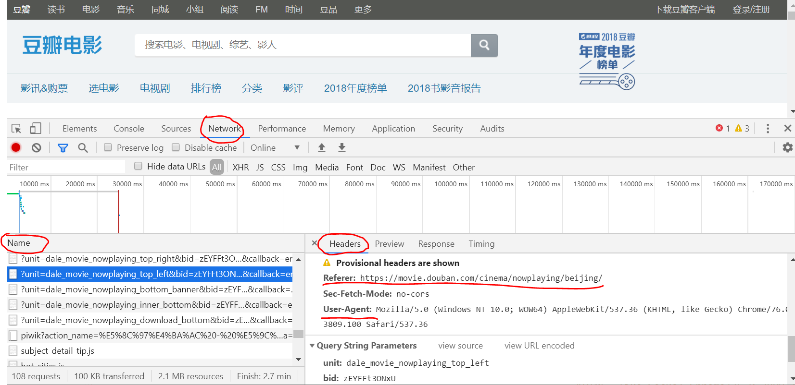
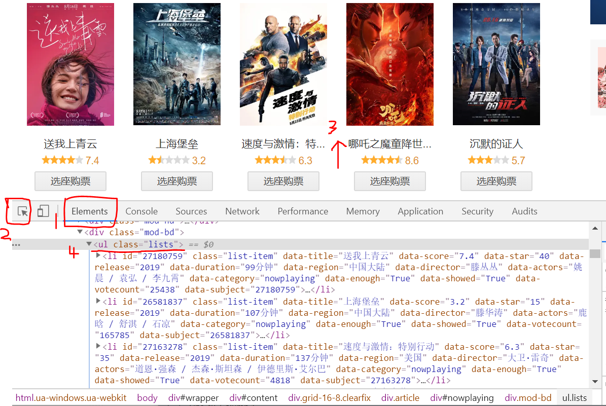
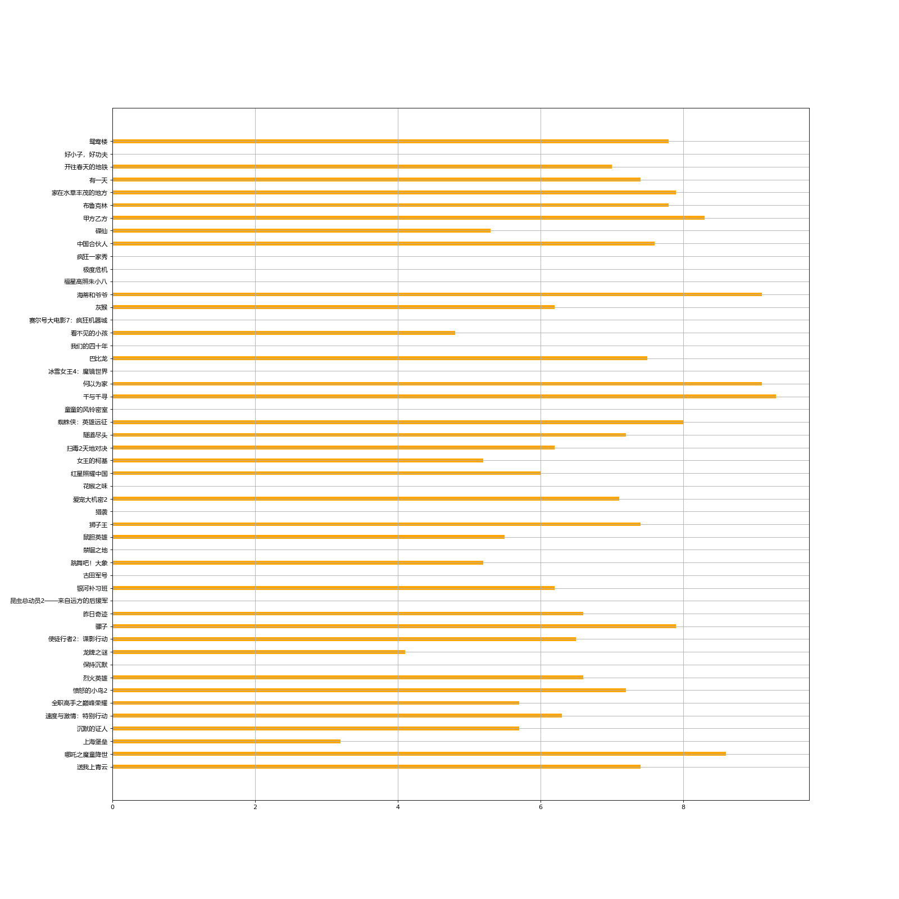

爬取豆瓣电影网站上正在热映的电影信息，获取电影评分信息，并以条形图图形化显示。
requests库使用
导入requests库
安装anaconda3时应该已经安装好requests库和lxml库，可以直接调用
1
2
| import requests
from lxml import etree
|
获取要爬取的网址信息
requests请求需要网址url和headers，伪装成正常的浏览器访问。
- 在谷歌浏览器中打开url对应的网址
- 右击选择检查，在弹出的框中点击Network，准备抓取网页传输信息。
- 刷新网页，在Name框中点击传输的相关内容，
- 可以在右侧框的Headers信息栏找到Requests Headers信息，需要记录下User-Agent和Referer信息，若无Referer信息，可忽略。

- 将User-Agent信息和Referer信息写入headers字典中。
1
2
3
4
5
| headers = {
'User-Agent': "Mozilla/5.0 (Windows NT 10.0; WOW64) AppleWebKit/537.36 (KHTML, like Gecko) Chrome/76.0.3809.100 Safari/537.36",
'Referer': "https://movie.douban.com/"
}
url = "https://movie.douban.com/cinema/nowplaying/beijing/"
|
发生requests请求，获取网页信息
1
2
| response = requests.get(url, headers=headers, verify=False)
text = response.text
|
xpath获取想要的内容
调用xlml，将获取的网页信息规范化为HTML文本，赋值给html对象
查看HTML文本，找到需要抓取的标签信息
- 在打开的url对应网页右击选择检查，在弹出的界面点击Elements
- 点击左上角的箭头按钮，然后点击网页上的电影信息，即可找到对应的标签信息

xpath选择要获取的标签信息
详细的xpath语法请查看另外一篇博客Python之xpath语法与lxml模块
1
2
| ul = html.xpath("//ul[@class='lists']")[0]
lis = ul.xpath("./li")
|
完整代码如下：
1
2
3
4
5
6
7
8
9
10
11
12
13
14
15
16
17
18
19
20
21
22
23
24
25
26
27
28
29
30
31
32
33
34
35
36
37
38
39
40
41
42
43
44
45
46
47
48
49
50
51
52
53
54
55
|
import requests
from lxml import etree
import matplotlib.pyplot as plt
from matplotlib import font_manager
headers = {
'User-Agent': "Mozilla/5.0 (Windows NT 10.0; WOW64) AppleWebKit/537.36 (KHTML, like Gecko) Chrome/76.0.3809.100 Safari/537.36",
'Referer': "https://movie.douban.com/"
}
url = "https://movie.douban.com/cinema/nowplaying/beijing/"
response = requests.get(url, headers=headers, verify=False)
text = response.text
html = etree.HTML(text)
ul = html.xpath("//ul[@class='lists']")[0]
lis = ul.xpath("./li")
movies = []
for li in lis:
title = li.xpath("@data-title")[0]
score = li.xpath("@data-score")[0]
duration = li.xpath("@data-duration")[0]
region = li.xpath("@data-region")[0]
director = li.xpath("@data-director")[0]
actors = li.xpath("@data-actors")[0]
thumbnail = li.xpath(".//img/@src")[0]
movie = {
'title': title,
'score': score,
'duration': duration,
'region': region,
'director': director,
'actor': actors,
'thumbnail': thumbnail
}
movies.append(movie)
my_font = font_manager.FontProperties(fname="C:\Windows\Fonts\msyh.ttc")
movies_name = [movies[i]['title'] for i in range(len(movies))]
score = [float(movies[i]['score']) for i in range(len(movies))]
plt.figure(figsize=(20, 15), dpi=80)
plt.barh(range(len(movies_name)), score, height=0.3, color="orange")
plt.yticks(range(len(movies_name)), movies_name, fontproperties=my_font)
plt.xticks()
plt.grid()
plt.savefig("./movies_score.png")
|
